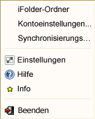
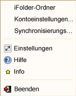

Exiting the iFolder Client
To exit from the iFolder client follow any of the options given below:
-
Right-click the
 icon in the notification area, then select .

icon in the notification area, then select .
 -
Click
When you select , iFolder displays a confirmation message. Click to confirm your action.
Files are synchronized with your iFolder server account only when you are connected to the iFolder server. You can stop synchronization by logging out of an account. iFolder continues to run in the background in offline mode. For information, see Logging Out of an iFolder Account.
You can have multiple accounts, each created on different host server (domain).